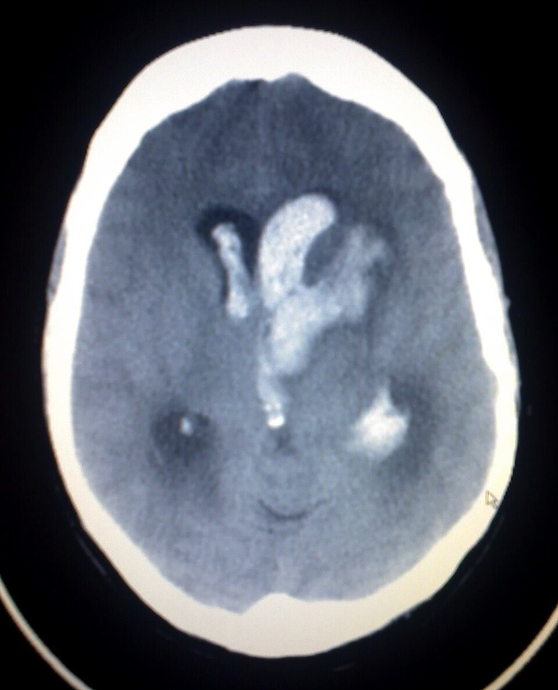

General information only. It does not replace advice from a health professional. For sudden neurological symptoms, call emergency services.


What it is
An intracerebral haemorrhage (brain haemorrhage) occurs when an artery bursts inside the brain and the blood forms a haematoma that compresses and damages the surrounding tissue. It accounts for 10-15% of strokes, but it is the most serious type: about 40% of patients die within the first month and many survivors are left with lasting effects. There are about 3.4 million cases worldwide each year.
Causes
- Long-standing high blood pressure: the most common cause. It damages the small, deep arteries, which eventually rupture. Hypertensive haemorrhages are usually in the basal ganglia, thalamus, pons or cerebellum.
- Cerebral amyloid angiopathy: deposits of amyloid protein in the arteries on the surface of the brain in older people. It produces "lobar" haemorrhages near the cortex, which tend to recur and are linked to cognitive decline.
- Anticoagulants: increase the risk and the size of the bleed.
- Vascular malformations (arteriovenous malformations, cavernomas), an important cause in young people.
- Tumours that bleed, drugs such as cocaine and amphetamines, excess alcohol, and clotting disorders.
- Haemorrhagic transformation of an ischaemic stroke, or thrombosis of the cerebral veins.
Symptoms
They come on suddenly and often worsen in the first minutes or hours because the haematoma grows:
- Weakness or loss of sensation on one side of the body, difficulty speaking, loss of vision: as in any stroke.
- Severe headache, vomiting and drowsiness or loss of consciousness, more common than in ischaemic stroke, due to the rise in pressure inside the skull.
- Seizures in some cases.
Symptoms alone cannot distinguish a haemorrhage from an infarct: a CT scan of the head is essential. That is why, for any symptom of stroke, call 112 and the stroke code is activated.
Diagnosis
- CT shows fresh blood as a white patch within minutes.
- CT angiography looks for a malformation or aneurysm, and can show the "spot sign", which warns that the haematoma will keep growing.
- MRI and sometimes angiography are done afterwards to look for the cause: microbleeds from amyloid angiopathy, cavernomas or tumours.
- Clotting tests, essential if anticoagulants are being taken.
Treatment
There is no medicine that "dissolves" the haematoma. Treatment aims to stop it growing and prevent complications, in a stroke unit or intensive care:
- Lowering blood pressure quickly and steadily, generally to a systolic below 140 mmHg.
- Reversing anticoagulants immediately: vitamin K and prothrombin complex concentrate for warfarin-type drugs, idarucizumab for dabigatran, and andexanet alfa or prothrombin complex for factor Xa inhibitors.
- The INTERACT3 trial showed that applying a "bundle" of measures (intensive control of blood pressure, glucose, temperature and clotting) reduces death and disability.
- Surgery: for cerebellar haematomas compressing the brainstem, some superficial lobar haematomas, and when there is hydrocephalus, which is treated with a drain. Minimally invasive surgery to evacuate the haematoma (ENRICH trial, 2024) has shown benefit in lobar haematomas. See neurosurgery.
- Prevention of venous thrombosis with intermittent pneumatic compression, and of pneumonia by checking swallowing.
Outlook and recovery
The outlook depends above all on the volume of the haematoma, its location, age, level of consciousness on arrival and whether blood has entered the ventricles. Recovery is slow, but can continue for many months with neurorehabilitation. It is important not to decide too early that nothing can be done: guidelines call for full treatment for at least the first few days.
Prevention
- Controlling blood pressure: the measure that prevents the most haemorrhages, including recurrences. See blood pressure and the brain.
- Limiting alcohol and avoiding drugs.
- Using anticoagulants only when indicated and with monitoring. Direct-acting anticoagulants cause half as many brain haemorrhages as warfarin-type drugs.
- After a haemorrhage, the decision to restart an antiplatelet or anticoagulant is made with the neurologist, weighing the risk of thrombosis against that of a new bleed. Left atrial appendage closure is an alternative in atrial fibrillation.
Questions to ask your doctor
- What caused the haemorrhage?
- What blood pressure should I keep?
- Can I take aspirin or anticoagulants again?
- Am I at higher risk of memory problems?
Recent guidelines and documents (2024-2026)
- Steiner T, Al-Shahi Salman R, et al. ESO/EANS guideline on the management of spontaneous intracerebral haemorrhage. Eur Stroke J. 2025. Link. European guideline on intracerebral haemorrhage, replacing the 2014 version.
- Bushnell C, et al. 2024 Guideline for the Primary Prevention of Stroke (AHA/ASA). Stroke. 2024;55:e344-e424. Link. Prevention of a first stroke.
- Spanish Ministry of Health. Estrategia en Ictus del Sistema Nacional de Salud (national stroke strategy). 2024 update. Link. Spain's national stroke strategy (in Spanish).
Sources
- Greenberg SM, et al. 2022 Guideline for the management of patients with spontaneous intracerebral hemorrhage. Stroke. 2022;53:e282-e361.
- Ma L, et al. The third Intensive Care Bundle with Blood Pressure Reduction in Acute Cerebral Haemorrhage Trial (INTERACT3). Lancet. 2023;402:27-40.
- Pradilla G, et al. Trial of early minimally invasive removal of intracerebral hemorrhage (ENRICH). N Engl J Med. 2024;390:1277-89.
- Steiner T, et al. European Stroke Organisation guidelines for the management of spontaneous intracerebral hemorrhage. Int J Stroke. 2014;9:840-55.
- Puy L, et al. Intracerebral haemorrhage. Nat Rev Dis Primers. 2023;9:14.